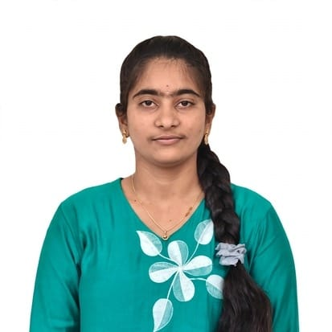

Motivated B.Tech Graduate with a strong foundation in programming, problem-solving and software development. Proficient in Python, SQL, HTML, CSS, JavaScript and MySQL with hands-on training in Full Stack Development. Seeking an entry-level Software Engineer role to apply my technical knowledge, work on real-world projects and grow with a dynamic organization.
Malineni Lakshmaiah Women ' s Engineering College - 75
Programming : Python, Javascript, SQL
Frontend : Html, css, Bootstrap, React.js
Backend : Django, Flask Database : MySQL
Tools : Git, Github, Vs code, Jupyter.
Role : Python Developer
Technologies : Python, Random Forest, Django, Scikit-learn, GridSearch CV
. Collected and preprocessed the CTG dataset by cleaning and preparing the data
• Developed a machine learning model to predict fetal health
• Optimized the model using GridSearch CV
• Integrated the model with Django for real-time prediction
Achieved 92% accuracy in predicting fetal health using Random Forest
Python Full Stack Developer Intern at Codegnan IT Solutions Currently undergoing hands-on training in Python Full Stack Development. Learning and developing web applications using Python, Django, Flask, HTML, CSS, JavaScript, Bootstrap, React.js, SQL, and MySQL
Participation Certificate - Build4AP GAL + IOT Hackathon 2024
3rd Prize Certificate - Build4AP GAL + IOT Hackathon 2024